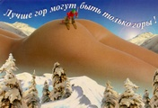

Новостя : Доскеры : Бродяги : Фотосы : Поприколу : Пиши сюда ! :
|
Don`t worry, Be Happy ! Новостя : Доскеры : Бродяги : Фотосы : Поприколу : Пиши сюда ! : |
| Смешное где-то рядом... :-) 12.11.06. Недавно обнаружил на работе пару простеньких и очень забавных флэш-мультиков. В них была веселая песенка на незнакомом языке. Поискал в интернете и оказалось, что из-за этой песенки в начале 2006 года в рунете был целый бум и до сих пор очень много фанатов и последователей !!! ... як цуп цоп парви каридола тык паривила тиц тандула Полный текст песни читайте и учите здесь...
В сети много информации, если понравится - наберите в поисковиках : "Loituma", "Финский фольклер", "Як-Цуп-Цоп" или "Полька" :) Или просто зайдите на сайт - loituma.ru или http://community.livejournal.com/ru_polkka или у меня на компе :)
(-: Голая правда об экстрималах в фото :-)

Чему нас учит семья и школа? |
Сборник Сноуборд-тема Фото-отчет Фото-сказка |